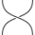

arrows from \(m\) to \(n\) are triples \((s,E,t) : m \to n\) s.t:
a rewriting system \((\Sigma , R)\) s.t. \(\mathbb{P} = \Sigma^*/\equiv_R\) with \(\Sigma = (\Sigma_1 ,\Sigma_2)\), where:
|  | |||||
|---|---|---|---|---|---|
| \(\eta : 0 \to 1\) | \(\mu : 2 \to 1\) | \(\epsilon : 1 \to 0\) | \(\delta : 2 \to 1\) | \(\sigma : 2 \to 1\) | \(\gamma : 2 \to 2\) |
Use a spacebar or arrow keys to navigate